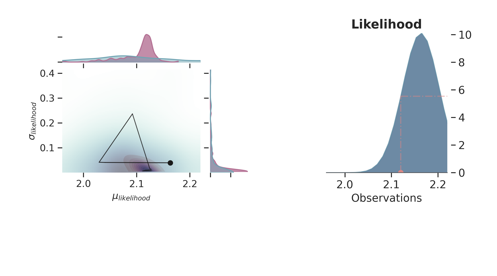

Note
Go to the end to download the full example code
Normal Prior, single observation¶
# sphinx_gallery_thumbnail_number = -1
import arviz as az
import matplotlib.pyplot as plt
import numpy as np
import pyro
import torch
from gempy_probability.plot_posterior import PlotPosterior
from _aux_func import infer_model
az.style.use("arviz-doc")
y_obs = torch.tensor([2.12])
y_obs_list = torch.tensor([2.12, 2.06, 2.08, 2.05, 2.08, 2.09,
2.19, 2.07, 2.16, 2.11, 2.13, 1.92])
pyro.set_rng_seed(4003)
# Before diving in sampling, let's look at a model, where we have a single observation to sample the posterior from a prior with a normal
# distribution for :math:`\mu` and a gamma distribution for :math:`\sigma`:
az_data = infer_model(
distributions_family="normal_distribution",
data=y_obs
)
az.plot_trace(az_data)
plt.show()
Warmup: 0%| | 0/1100 [00:00, ?it/s]
Warmup: 0%| | 1/1100 [00:00, 2.55it/s, step size=1.80e+00, acc. prob=1.000]
Warmup: 2%|▏ | 27/1100 [00:00, 70.55it/s, step size=3.96e-02, acc. prob=0.754]
Warmup: 4%|▍ | 42/1100 [00:00, 88.75it/s, step size=7.73e-02, acc. prob=0.773]
Warmup: 5%|▌ | 57/1100 [00:00, 100.30it/s, step size=1.03e-01, acc. prob=0.781]
Warmup: 6%|▋ | 71/1100 [00:00, 89.06it/s, step size=4.27e-02, acc. prob=0.777]
Warmup: 8%|▊ | 83/1100 [00:01, 90.97it/s, step size=6.82e-02, acc. prob=0.782]
Warmup: 9%|▉ | 101/1100 [00:01, 112.33it/s, step size=3.77e-01, acc. prob=1.000]
Sample: 12%|█▏ | 136/1100 [00:01, 173.04it/s, step size=3.77e-01, acc. prob=0.711]
Sample: 15%|█▌ | 168/1100 [00:01, 210.44it/s, step size=3.77e-01, acc. prob=0.697]
Sample: 18%|█▊ | 201/1100 [00:01, 243.00it/s, step size=3.77e-01, acc. prob=0.739]
Sample: 23%|██▎ | 255/1100 [00:01, 326.20it/s, step size=3.77e-01, acc. prob=0.573]
Sample: 27%|██▋ | 294/1100 [00:01, 340.76it/s, step size=3.77e-01, acc. prob=0.580]
Sample: 31%|███ | 340/1100 [00:01, 373.53it/s, step size=3.77e-01, acc. prob=0.531]
Sample: 34%|███▍ | 379/1100 [00:01, 351.96it/s, step size=3.77e-01, acc. prob=0.580]
Sample: 38%|███▊ | 416/1100 [00:02, 329.38it/s, step size=3.77e-01, acc. prob=0.612]
Sample: 41%|████ | 450/1100 [00:02, 322.01it/s, step size=3.77e-01, acc. prob=0.615]
Sample: 44%|████▍ | 483/1100 [00:02, 314.94it/s, step size=3.77e-01, acc. prob=0.632]
Sample: 47%|████▋ | 515/1100 [00:02, 315.24it/s, step size=3.77e-01, acc. prob=0.629]
Sample: 56%|█████▋ | 621/1100 [00:02, 523.07it/s, step size=3.77e-01, acc. prob=0.506]
Sample: 66%|██████▌ | 724/1100 [00:02, 667.52it/s, step size=3.77e-01, acc. prob=0.426]
Sample: 72%|███████▏ | 793/1100 [00:02, 469.48it/s, step size=3.77e-01, acc. prob=0.461]
Sample: 77%|███████▋ | 850/1100 [00:02, 422.76it/s, step size=3.77e-01, acc. prob=0.477]
Sample: 84%|████████▎ | 920/1100 [00:03, 482.23it/s, step size=3.77e-01, acc. prob=0.437]
Sample: 89%|████████▉ | 983/1100 [00:03, 513.69it/s, step size=3.77e-01, acc. prob=0.417]
Sample: 95%|█████████▍| 1041/1100 [00:03, 437.56it/s, step size=3.77e-01, acc. prob=0.439]
Sample: 99%|█████████▉| 1091/1100 [00:03, 396.82it/s, step size=3.77e-01, acc. prob=0.458]
Sample: 100%|██████████| 1100/1100 [00:03, 310.48it/s, step size=3.77e-01, acc. prob=0.461]
posterior predictive shape not compatible with number of chains and draws.This can mean that some draws or even whole chains are not represented.
Prior Space¶
p = PlotPosterior(az_data)
p.create_figure(figsize=(9, 5), joyplot=False, marginal=True, likelihood=True)
p.plot_marginal(
var_names=['$\\mu_{likelihood}$', '$\\sigma_{likelihood}$'],
plot_trace=False,
credible_interval=.93,
kind='kde',
group="prior",
joint_kwargs={
'contour' : True,
'pcolormesh_kwargs': {}
},
joint_kwargs_prior={
'contour': False,
'pcolormesh_kwargs': {}
}
)
p.axjoin.set_xlim(1.96, 2.22)
p.plot_normal_likelihood(
mean='$\\mu_{likelihood}$',
std='$\\sigma_{likelihood}$',
obs='$y$',
iteration=-6,
hide_lines=True
)
p.likelihood_axes.set_xlim(1.70, 2.40)
plt.show()
Prior and Posterior Space¶
def plot_posterior(iteration=-1):
p = PlotPosterior(az_data)
p.create_figure(figsize=(9, 5), joyplot=False, marginal=True, likelihood=True)
p.plot_marginal(
var_names=['$\\mu_{likelihood}$', '$\\sigma_{likelihood}$'],
plot_trace=True,
credible_interval=.93,
iteration=iteration,
kind='kde',
group="both",
joint_kwargs={
'contour' : True,
'pcolormesh_kwargs': {}
},
joint_kwargs_prior={
'contour' : False,
'pcolormesh_kwargs': {}
}
)
p.axjoin.set_xlim(1.96, 2.22)
p.plot_normal_likelihood(
mean='$\\mu_{likelihood}$',
std='$\\sigma_{likelihood}$',
obs='$y$',
iteration=iteration,
hide_lines=False
)
p.likelihood_axes.set_xlim(1.96, 2.22)
p.fig.set_label(f'Iteration {iteration}')
plt.show()
for i in np.linspace(50, 800, 5, dtype=int):
plot_posterior(i)
- 
/home/leguark/gempy_probability/gempy_probability/plot_posterior.py:254: UserWarning: color is redundantly defined by the 'color' keyword argument and the fmt string "bo" (-> color='b'). The keyword argument will take precedence.
self.axjoin.plot(theta1_val, theta2_val, 'bo', ms=6, color='k')
MCMC boils down to be a collection of methods helping to do Bayesian inference, thus based on Bayes Theorem:
\(P(\theta | x)\) is the Posterior
\(P(x)\) is the Prior
\(P(x | \theta)\) is the Likelihood
\(P(x)\) is the Evidence
As calculating the posterior in this form is most likely not possible in real-world problems, if one could sample from the posterior, one might approximate it with Monte Carlo. But in order to sample directly from the posterior, one would need to invert Bayes Theorem.
The solution to this problem is, when we cannot draw Monte Carlo (MC) samples from the distribution directly, we let a Markov Chain do it for us. [1]
What con we do next?¶
Increasing the number of observations - sampling (Normal Prior, several observations)
License¶
The code in this case study is copyrighted by Miguel de la Varga and licensed under the new BSD (3-clause) license:
https://opensource.org/licenses/BSD-3-Clause
The text and figures in this case study are copyrighted by Miguel de la Varga and licensed under the CC BY-NC 4.0 license:
https://creativecommons.org/licenses/by-nc/4.0/ Make sure to replace the links with actual hyperlinks if you’re using a platform that supports it (e.g., Markdown or HTML). Otherwise, the plain URLs work fine for plain text.
Total running time of the script: (0 minutes 15.768 seconds)